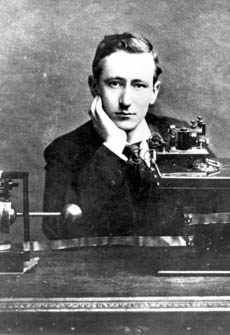

41 GUGLIELMO MARCONI 1874-1937
Dari
keluarga berada, lahirlah Guglielmo Marconi tahun 1874 di
Bologna, Itali. Penemu radio ini dapat pendidikan privat
dari seorang guru. Tahun 1894 tatkala usianya menginjak dua
puluh, Marconi baca percobaan-percobaan yang dilakukan oleh
Heinrich Hertz beberapa tahun sebelumnya.
Percobaan-percobaan ini dengan gamblang mendemonstrasikan
adanya gelombang elektromagnetik yang tak tampak oleh mata,
bergerak lewat udara dengan kecepatan suara.
Marconi lantas tergugah dengan ide bahwa gelombang ini
bisa dimanfaatkan mengirim tanda-tanda melintasi jarak jauh
tanpa lewat kawat yang menyediakan banyak kemungkinan
berkembangnya komunikasi yang tak bisa dijangkau telegram.
Misalnya, dengan cara ini berita-berita dapat dikirim ke
kapal di tengah laut.
Tahun 1895, hanya setahun kerja keras, Marconi berhasil
memprodusir peralatan yang diperlukan. Tahun 1896 dia
memperagakan alat penemuannya di Inggris dan memperoleh hak
paten pertamanya untuk penemuan ini. Marconi bergegas
mendirikan perusahaan dan "Marconi" pertama dikirim tahun
1898. Tahun berikutnya dia sudah sanggup kirim berita tanpa
lewat kawat menyeberang selat Inggris. Meskipun patennya
yang terpenting diperolehnya tahun 1900, Marconi meneruskan
pembuatan dan mempatenkan banyak penyempurnaan-penyempurnaan
atas dasar penemuannya sendiri. Di tahun 1901 dia berhasil
mengirim berita radio melintasi Samudera Atlantik, dari
Inggris ke Newfoundland.
Makna penting dari penemuan barunya secara dramatis
dilukiskan di tahun 1909 tatkala kapal S.S. Republic rusak
akibat tabrakan dan tenggelam ke dasar laut. Berita radio
amat membantu, semua penumpang bisa diselamatkan kecuali
enam orang. Pada tahun yang sama Marconi berhasil meraih
Hadiah Nobel untuk penemuannya. Dan pada tahun berikutnya
dia berhasil mengirim berita radio dari Irlandia ke
Argentina, suatu jarak yang lebih dari 6000 mil.
Semua berita ini dikirim lewat tanda-tanda sistem kode
Marconi. Sebagaimana diketahui, suara itu dapat dikirim
lewat radio, tetapi hal ini baru bisa terlaksana sekitar
tahun 1915. Penyiaran radio dalam skala komersial baru mulai
awal tahun 20-an, tetapi kepopulerannya dan arti pentingnya
tumbuh dengan amat cepatnya.
Sebuah penemuan yang hak patennya punya harga tinggi
dengan sendirinya menimbulkan pertentangan di pengadilan.
Tetapi, rupa-rupa tuntutan lewat pengadilan sirna melenyap
sesudah tahun 1914 tatkala pengadilan mengakui hak-hak
Marconi. Pada tahun berikutnya, Marconi melakukan pula
penyelidikan penting di bidang gelombang pendek dan
komunikasi microwave. Dia menghembuskan nafas terakhir di
Roma tahun 1937.
Selain Marconi menjadi kesohor selaku penemu, jelas pula
pengaruhnya tak diragukan dalam hal arti penting radio dan
hal-hal yang berkaitan dengan itu. Marconi tidak menemukan
televisi. Tetapi, penemuan radionya merupakan pembuka jalan
penting buat televisi, karena itu adalah layak menganggap
Marconi punya saham juga dalam pengembangan televisi.
Jelas, komunikasi tanpa kawat punya makna teramat penting
dalam dunia modern. Ini bermanfaat amat buat pengiriman
berita, untuk hiburan, untuk keperluan militer, untuk
penyelidikan ilmiah, untuk tugas-tugas kepolisian, dan
lain-lain keperluan. Meskipun untuk beberapa hal telegram
(yang sudah diketemukan orang lebih dari setengah abad
sebelumnya) boleh dibilang punya kegunaan juga, penggunaan
radio secara besar-besaran betul-betul tak tertandingkan.
Dia bisa mencapai mobil, kapal di lautan, pesawat yang
sedang mengudara, bahkan pesawat ruang angkasa. Jelas
merupakan penemuan lebih penting ketimbang tilpun karena
berita-berita yang dikirim via tilpun dapat pula dikirim
lewat radio, lagi pula pesan-pesan lewat radio dapat dikirim
ke tempat-tempat yang tak bisa dicapai tilpun.
Marconi punya tempat urutan lebih tinggi dalam daftar ini
ketimbang Graham Bell semata-mata berhubung komunikasi tanpa
kawat merupakan penemuan lebih penting daripada tilpun. Saya
tempatkan Edison sedikit lebih tinggi dalam urutan daftar
buku ini ketimbang Marconi lantaran jumlah besar penemuan
yang sudah dilakukannya, meski tak ada satu pun daripadanya
yang mengungguli arti penting radio. Karena radio dan
televisi hanyalah merupakan bagian kecil saja dari
penggunaan praktis dari kerja teoritis Michael Faraday dan
James Clerk Maxwell, adillah apabila Marconi mesti
ditempatkan dalam urutan sedikit lebih bawah dari kedua
orang itu. Bersamaan dengan itu jelas pula bahwa sejumlah
kecil saja tokoh-tokoh politik yang punya pengaruh besar
terhadap dunia seperti yang dipunyai Marconi, karena itu
layak pula dia ditempatkan pada kedudukan cukup tinggi dalam
daftar urutan buku ini.
Situs Web
- http://nobelprize.org/physics/laureates/1909/
- http://www.pbs.org/wgbh/aso/databank/entries/btmarc.html
- http://people.deas.harvard.edu/~jones/cscie129/nu_lectures/lecture6/marconi/marconi.html
|